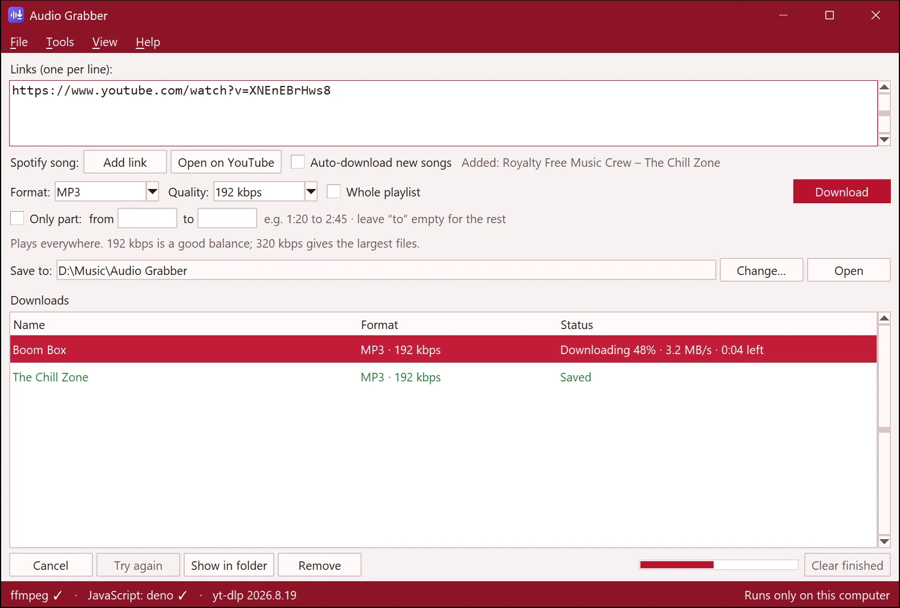

Audio Grabber
Paste links from YouTube and over a thousand other sites, and save them as audio or video, with whole playlists, clips and your own file names.
Download Audio GrabberZIP · about 130 MBFree · Windows 10 & 11 · No account
Paste a link and get an MP3, M4A, Opus, FLAC, WAV or MP4 with the title, artist and cover art filled in. Whole playlists become tidy album folders. Nothing is uploaded anywhere.
Paste links from YouTube and over a thousand other sites, and save them as audio or video, with whole playlists, clips and your own file names.
Download Audio GrabberZIP · about 130 MB
Includes everything in Audio Grabber
Also finds the song playing in the Spotify app on YouTube. Add it to your downloads with one click, or let it save every new song you listen to automatically.
Download Spotify editionZIP · about 130 MBUse one edition or the other. Both share the same settings and the same Firefox extension, so you can switch any time: unzip the other edition and start it, and your choices come along.
MP3 up to 320 kbps, M4A, Opus, FLAC, WAV, the original audio untouched, or MP4 video up to 4K.
A folder named after the playlist, numbered tracks, one shared cover and album tags, so your music player shows it as a proper album.
Enter a start and end time like 1:20 to 2:45 and save only that section, cut exactly.
Title, Artist - Title, Title - Artist or Date - Title. Cover art and tags are embedded automatically.
Follows your Windows theme, with Classic, Olive, Crimson and Olive & crimson colour schemes.
Right-click any page or link and choose Download as ▸ MP3, and the app does the rest in the background.
Use the Spotify app for Windows as usual. The edition reads the artist and title from Windows' media controls, the same thing the volume pop-up shows.
It finds the studio version on YouTube and puts its link in the box (Ctrl+Shift+S works too). Open on YouTube plays it in your browser instead.
Tick Auto-download new songs and every song you play for at least an customizable amount of seconds is saved in your chosen format. Ads and skipped songs are left out, and no song is saved twice.
Nothing is copied from Spotify: the songs come from YouTube, and the edition never needs your Spotify account, password or an API key. When it isn't sure it found the right song, auto-download skips it instead of guessing.
Get the edition you want and unzip its folder anywhere you like. Nothing else needs installing: ffmpeg and everything else is included.
The first time, Windows SmartScreen may say it doesn't know the app yet. Click More info ▸ Run anyway. That's because the app isn't code-signed, not because anything is wrong.
Pick a format, tick Whole playlist for albums, and your files land in Music\Audio Grabber unless you choose another folder.
Add a toolbar button and a right-click Download as menu to Firefox. The extension is signed by Mozilla, collects no data, and works with both editions: it hands the work to Audio Grabber on your computer, so start the app once before using it.
Firefox will ask you to allow the installation. Needs Firefox 140 or newer on Windows.
Audio Grabber runs entirely on your computer. There's no account, no analytics and no cloud service. It only talks to the site you're downloading from, and to PyPI when you choose to update its download engine.
If you listen to music in the Spotify app and want to keep songs you hear, get the Spotify edition. It includes everything Audio Grabber does. Otherwise the standard Audio Grabber is all you need.
No. It only reads the artist and title Windows already shows for the Spotify app, and downloads the song from YouTube. It works with the Spotify desktop app on Windows, not the web player.
Sites change often. Choose Tools ▸ Update yt-dlp in the app, then restart it. That fixes almost every problem.
The ready-made downloads are for Windows. The source code also runs on macOS and Linux with Python (without the Spotify features); see the README on GitHub.
It includes everything it needs, ffmpeg for converting and Deno for YouTube, so you don't have to install anything else.
Yes, completely.